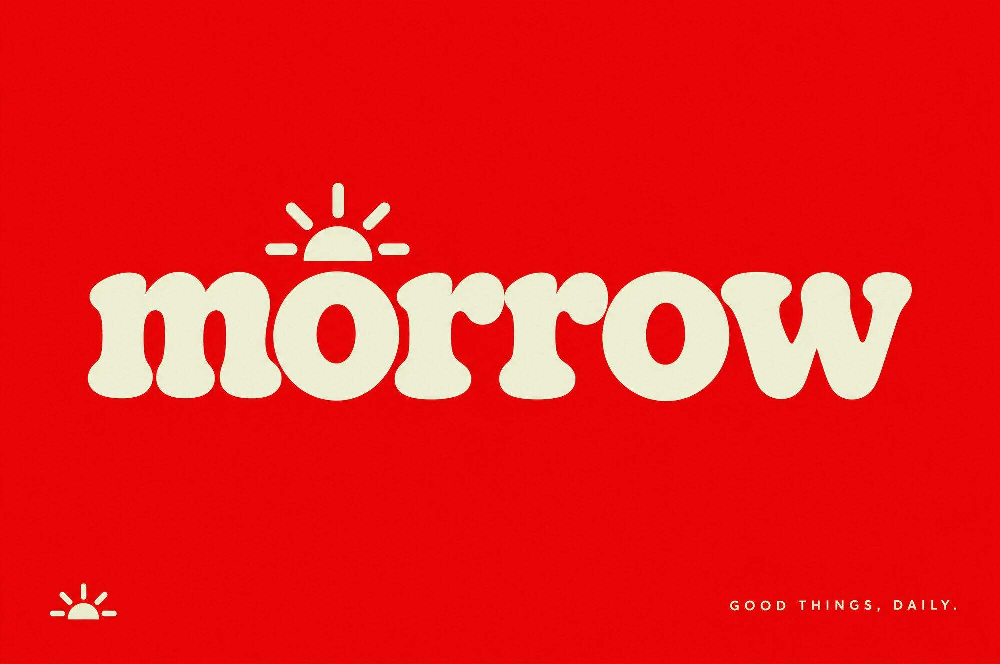
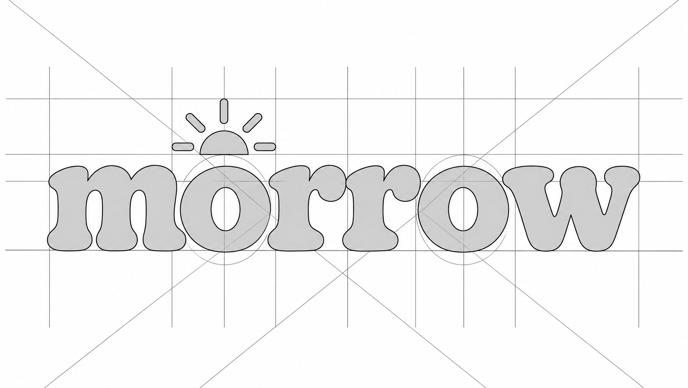
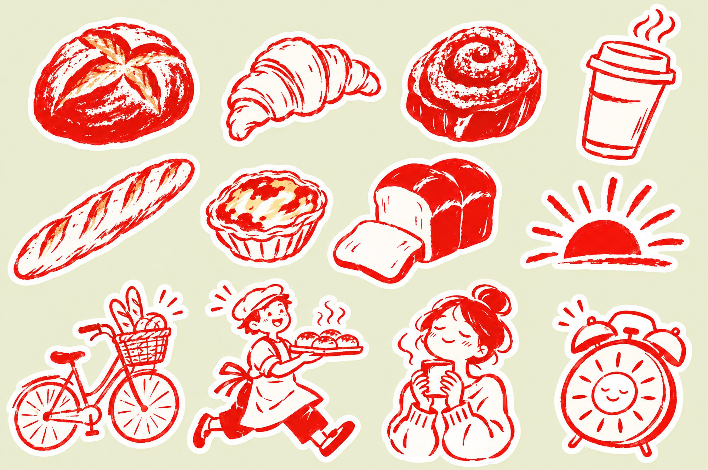
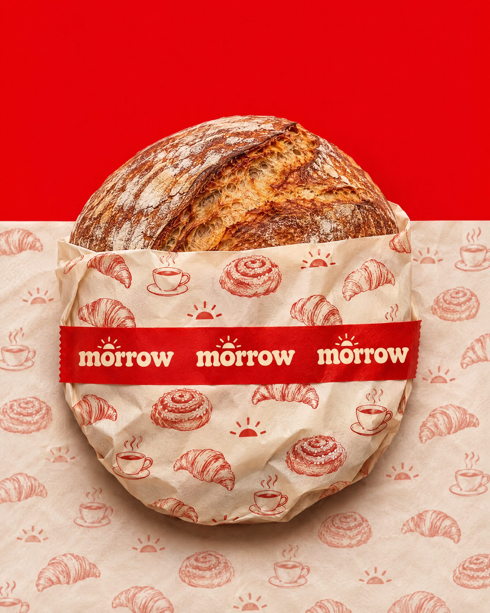
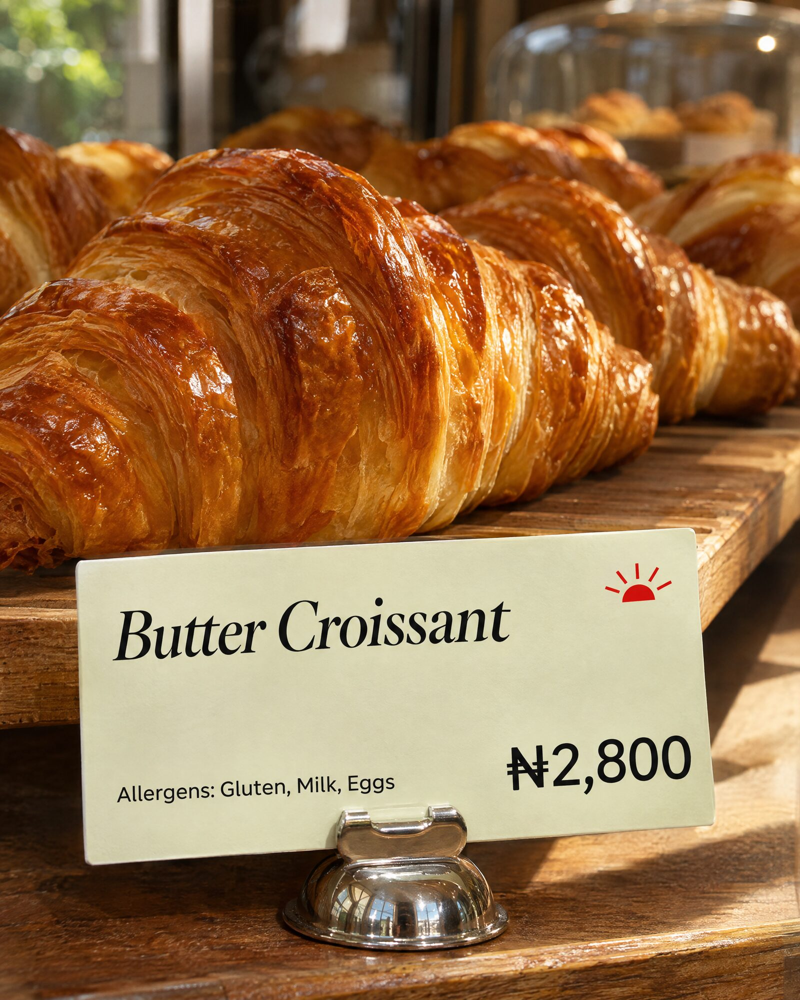
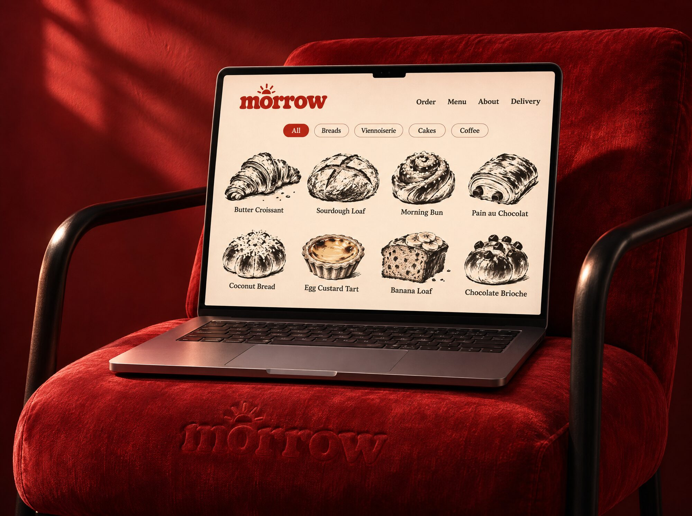
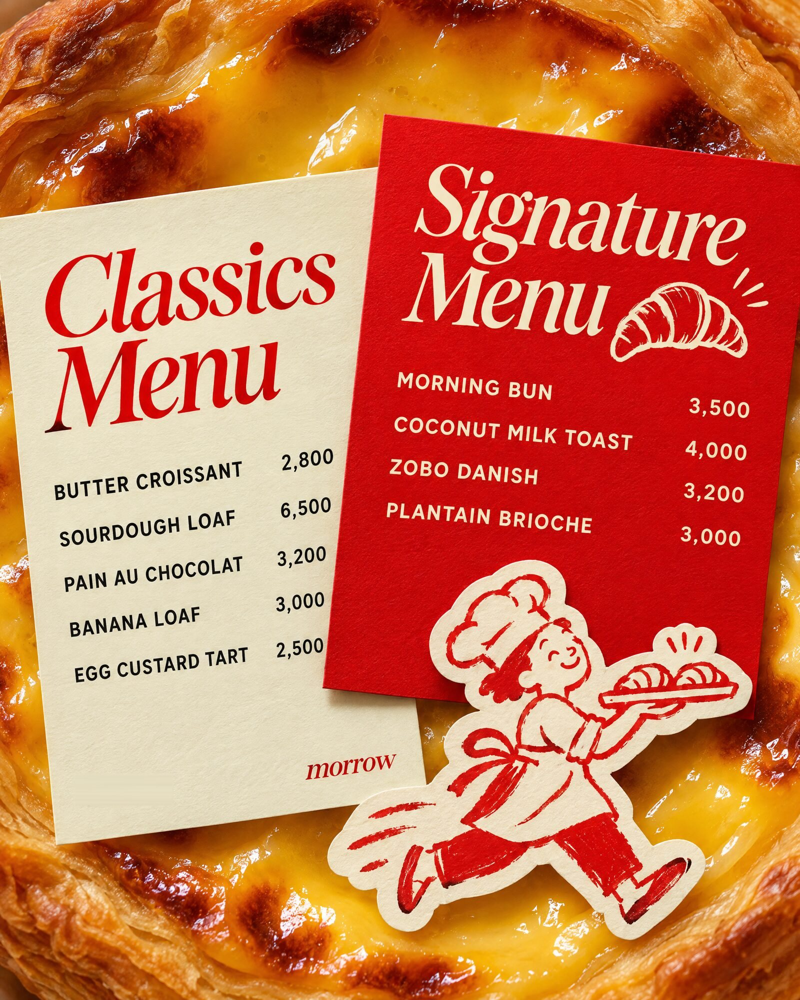
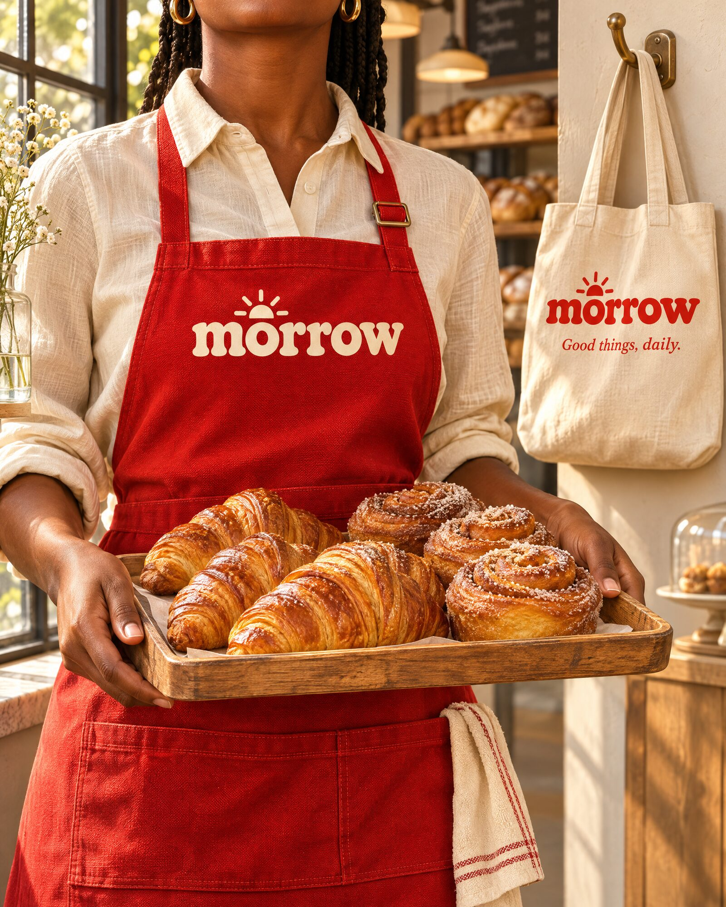
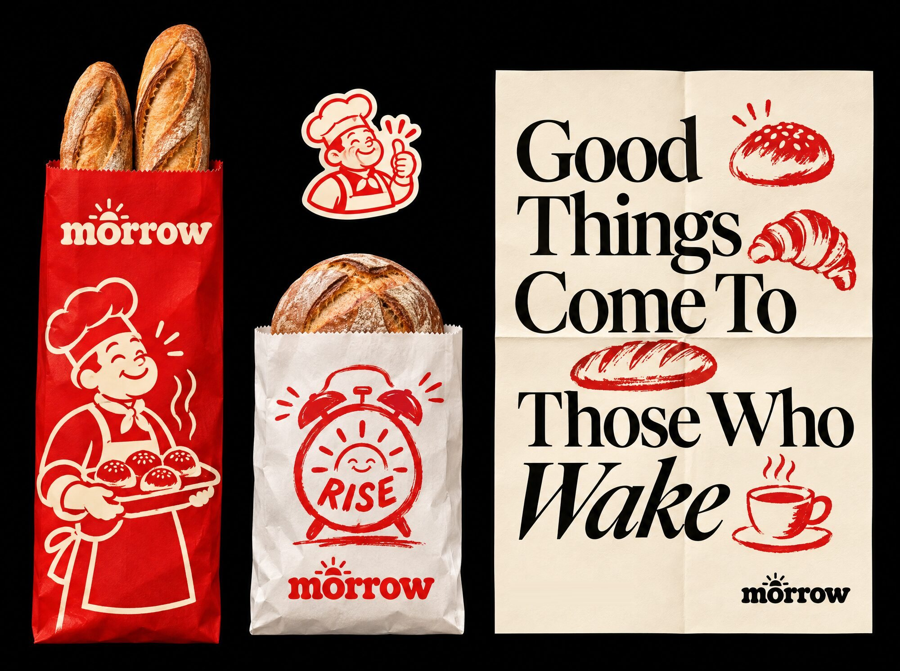
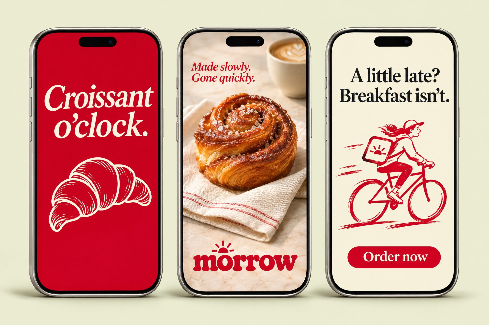

Morrow Visual Identity & Bakery Branding
- Client
- Morrow Bakery, concept
- Sector
- Bakery & everyday delivery
- Scope
- Wordmark, type, colour, illustration, packaging, digital
- Line
- Good things, daily.

Visual Brand Identity© November 2026Morrow Bakery Branding
Morrow is a neighbourhood bakery and everyday delivery service built around one belief: small daily rituals deserve a little more care. Fresh bread, a familiar coffee, something good brought to your door before the day gets loud.
The identity pairs a soft, generous wordmark with a small rising sun that sits above the first o, the same way a morning sits above the day. Everything prints in one confident Signal Red on warm cream, and a loose, hand-drawn illustration family carries the brand onto wrappers, labels, menus and bags.
The result feels familiar from the first hello, and unmistakable on a busy street, a coffee cup or a phone screen.


ABCDEFGHIJKLMNOPQRSTUVWXYZ
abcdefghijklmnopqrstuvwxyz 0123456789
ABCDEFGHIJKLMNOPQRSTUVWXYZ
abcdefghijklmnopqrstuvwxyz 0123456789 ₦ & ! ?
#F20E0ER242 G14 B14Primary ink
#ECEFD5R236 G239 B213Paper and ground
#C11410R193 G20 B16Shadow and print
#280F0FR40 G15 B15Type and detail




Morrow is where a good day starts. We bake fresh every morning and bring it to your door while it is still warm.
(07)




How Morrow sounds
Your morning looks good on you.
On a coffee cupA little late? Breakfast isn’t.
On a delivery noteMade slowly. Gone quickly.
On a bread wrap

Thank you for scrolling.
Morrow Bakery Branding (Visual Identity) · Concept project
Morrow is an independent concept brand. Prices are illustrative.